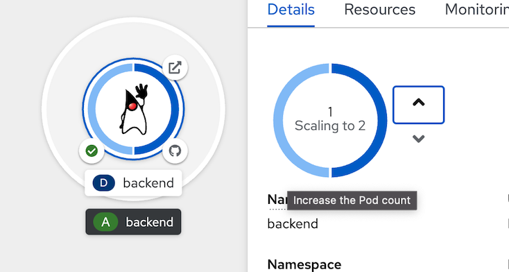
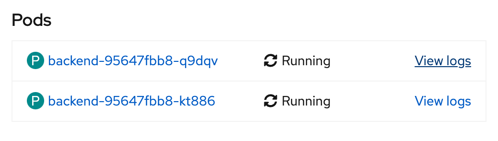
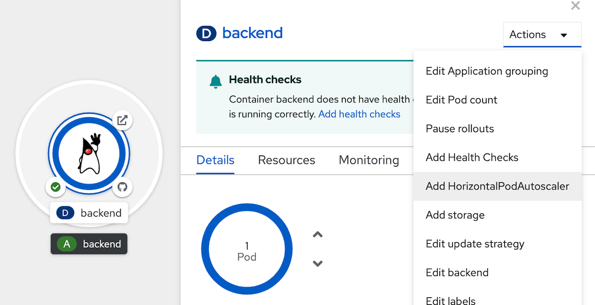
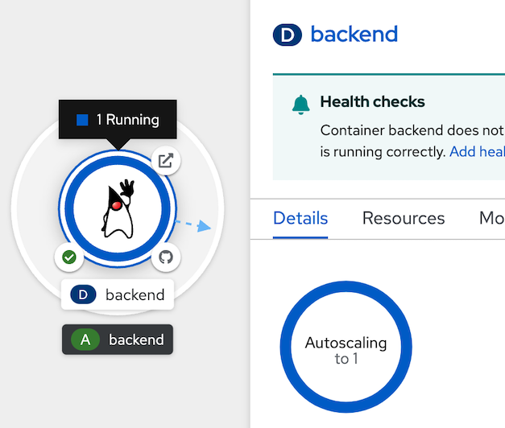
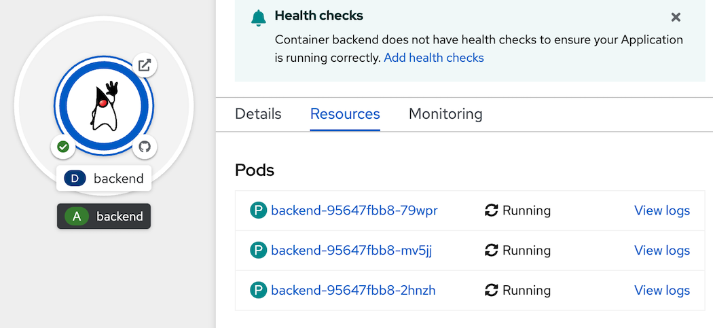

Scaling up your application in order to handle workload
Prerequisite
- Complete Deploy application to openshift with s2i
- Go to your project (same as your username)
- Open Web Terminal by click '>_' on top of OpenShift Web Console
- use web terminal to run command line
Manual Scale Application
- click topology in left menu, click Duke icon (backend deployment), Details tab
- click increase ther pod count (^ icon) to 2 Pod
- wait until application scale to 2 Pods (circle around Duke icon change to dark blue) 
- Test load to application, go to web terminal, run below command
example result, check have result from 2 pods (Host value)BACKEND_URL=https://$(oc get route backend -o jsonpath='{.spec.host}') while [ 1 ]; do curl $BACKEND_URL/backend printf "\n" sleep 10 doneBackend version:v1, Response:200, Host:backend-95647fbb8-kt886, Status:200, Message: Hello, World Backend version:v1, Response:200, Host:backend-95647fbb8-q9dqv, Status:200, Message: Hello, World Backend version:v1, Response:200, Host:backend-95647fbb8-kt886, Status:200, Message: Hello, World Backend version:v1, Response:200, Host:backend-95647fbb8-q9dqv, Status:200, Message: Hello, World - after few minute, type 'ctrl-c' in web terminal to terminated curl command
- go to Resources Tab, in Pods section, show 2 pods after scale
- click 'View logs' of 1st Pod and 2nd Pod to confirm both pod are processed.

example of 1st pod
example of 2nd pod - back to detail pages of backend deployment, scale pod to 0 (for this case, no pod for this application)
- scale backend to 1 pod

Auto Scale Application
- add HorizontalPodAutoscaler
- go to Topology, click at Duke icon for open backend deployment, click action dropdown menu, select Add HorizontalPodAutoscaler 
- in Add HorizontalPodAutoscaler, use Form view
- set Name: example
- Minimum Pods: 1
- Maximum Pods: 3
- CPU Utilization: 1%
- click save, and wait until backend deployment change to Autoscaling 
- load test to backend application for proof auto scale
- go to web terminal
- run load test command
BACKEND_URL=https://$(oc get route backend -o jsonpath='{.spec.host}') while [ 1 ]; do curl $BACKEND_URL/backend printf "\n" done - click detail tab of backend deployment, wait until autoscaled to 3 (wait a few minutes)
- click resources tab, see 3 pods auto scale 
- click Observe tab to view CPU usage
- back to web terminal, input 'ctrl-c' to terminate load test command
- wait 5 minute, autoscaled will reduce pod to 1.
- remove HorizontalPodAutoscaler, go to backend deployment information page, select action menu, select remove HorizontalPodAutoscaler
- confirm Remove, and wait until backend change to manual scale

- Optional: if you don't want to wait autoscale down to 1 pod, you can remove HorizontalPodAutoscaler and manual scale down to 1 by yourself.